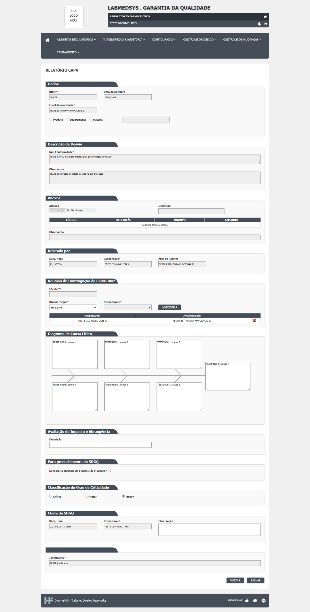

DV-GQ-011 · Relatório de CAPA aparentemente não gravava (descartado: faltava o Responsável da área)
Suspeita da rodada de 15/10: o Relatório de CAPA confirmava a inclusão, mas a situação do desvio nunca saía de "Pendente Relatório de CAPA". DESCARTADO em 16/10/2026: a CAPA grava normalmente quando os 7 campos do diagrama e uma Divisão/Seção com Responsável são preenchidos; o "não grava" foi falha do roteiro de teste (faltava escolher o Responsável da área, campo obrigatório que a tela só indica pela mensagem de validação).
Como reproduzir o erro, passo a passo
- Abrir o Relatório de CAPA de um desvio em "Pendente Relatório de CAPA" e salvar sem escolher o Responsável da área.
Esperado
Gravar e avançar a situação do desvio (se todos os campos obrigatórios estiverem preenchidos).
Obtido
Em 15/10: a situação não avançou. Em 16/10, com todos os campos preenchidos: a CAPA gravou e o desvio seguiu até "Aprovado Plano Ação Corretiva".
Evidência (captura da tela)

DV-GQ-018 · Imprimir o relatório do desvio (e o CAPA) abre uma página de erro
Imprimir o relatório do desvio (tela Relatório de Desvios), a lista da tela Registro Ação Corretiva Imediata e o CAPA (e, nas rodadas seguintes, as telas Pré Avaliação, Avaliação Área e Avaliação Relatório Desvios) abre uma página de erro no lugar do documento, em todos os RDs testados. Os relatórios das telas Acompanhamento RD e Controle de Emissão de RNC imprimem normalmente. A confirmar se o problema é do ambiente de teste. Por causa dele, os casos que pedem comparar o relatório impresso ficaram bloqueados.
Como reproduzir o erro, passo a passo
- Imprimir o RD (tela 1), a lista da tela 2 ou o CAPA (tela 6).
Esperado
Documento impresso.
Obtido
Página de erro no lugar do documento impresso, em todos os RDs testados (telas 1 a 6).
Evidência (captura da tela)

DV-GQ-064 · O Relatório de CAPA grava sem avaliação de impacto e sem observação do chefe
Relatório de CAPA grava sem avaliação de impacto e sem observação do chefe.
Como reproduzir o erro, passo a passo
- Relatório de CAPA completo, impacto e observação do chefe em branco, Salvar.
Esperado
Recusa.
Obtido
Grava e segue para o plano.
Evidência (captura da tela)

DV-GQ-065 · A caixa de Controle de Mudanças do CAPA é aceita, mas o valor não é guardado
A caixa de Controle de Mudanças é aceita mas o valor não é guardado nem mostrado.
Como reproduzir o erro, passo a passo
- Marcar a caixa de Controle de Mudanças, Salvar, ler o histórico e a tela 5.
Esperado
O "Sim" guardado e visível.
Obtido
Nada.
Sem captura de tela registrada para este defeito.
DV-GQ-084 · Excluir uma pessoa da reunião de causa raiz tira todas as da mesma divisão
Excluir uma pessoa da reunião de causa raiz tira todas as da mesma divisão.
Como reproduzir o erro, passo a passo
- Tela 6, adicionar duas pessoas da mesma divisão, excluir uma.
Esperado
Sai só a excluída.
Obtido
As duas saem.
Evidência (captura da tela)
DV-GQ-033 · Ao salvar com vários campos faltando, a tela mostra só uma mensagem
Ao salvar com vários campos faltando, a tela mostra só uma mensagem. O que a tela mostra: Só a última mensagem aparece (por exemplo, só a divisão no CAPA; só o local na tela 1).
Como reproduzir o erro, passo a passo
- Salvar com vários campos faltando.
Esperado
Todas as mensagens.
Obtido
Só a última mensagem aparece (por exemplo, só a divisão no CAPA; só o local na tela 1).
Evidência (captura da tela)